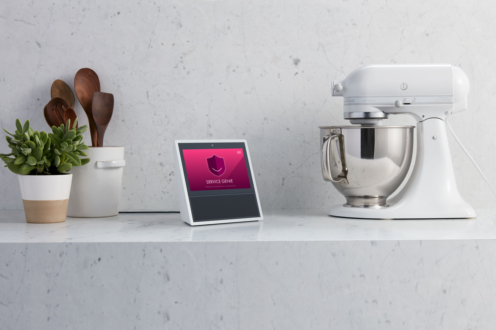
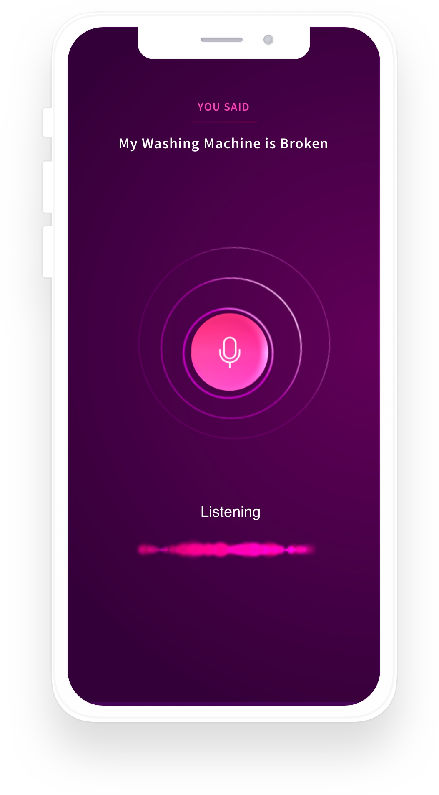
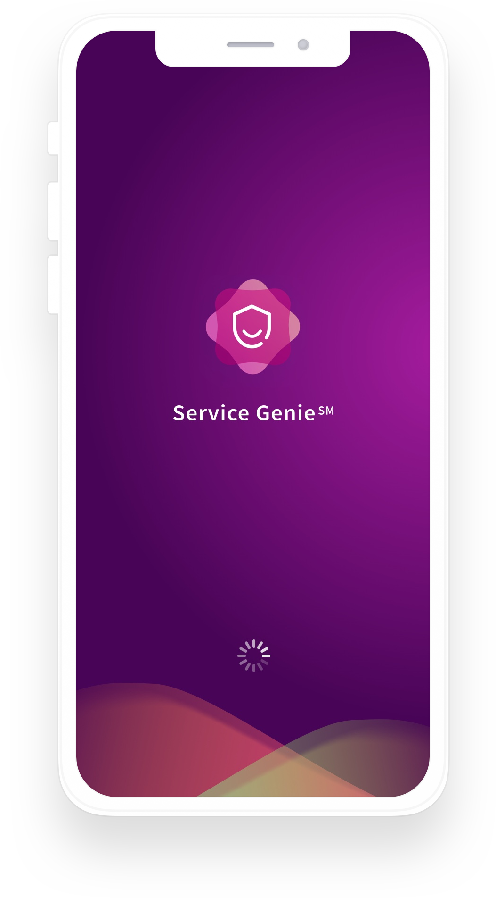
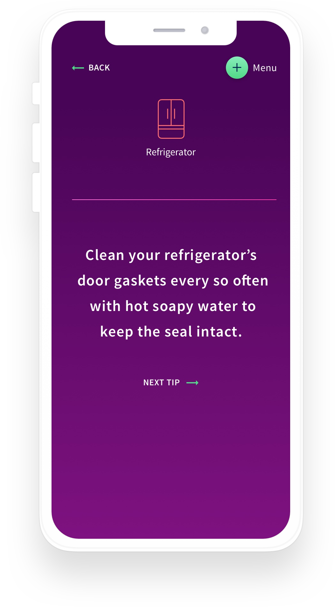

Service Genie

Creating an Alexa skill to support AIG’s warranty business.
Our experience design team was enlisted to launch a voice UI experience to support AIG’s US Warranty Business. We began by designing and conducting research for customer insights. Based on our learnings,we then developed a voice interface concept that made getting information and support easier for customers while elegantly supporting key business requirements for AIG. As part of the project, the XD team also developed a suite of companion tools, including an augmented reality app and a voice interface app for iPhone.
A live demo was unveiled to a closed audience at the 2018 Consumer Electronics Show (CES). and was extremely well received. Following positive response there, the Service Genie skill for Amazon Alexa was released to a pilot audience in December 2018.
iPhone Proof-of-Concept
The team was later engaged to build a proof of concept, which resulted directly in AIG winning Apple’s iPhone warranty business in Japan.


